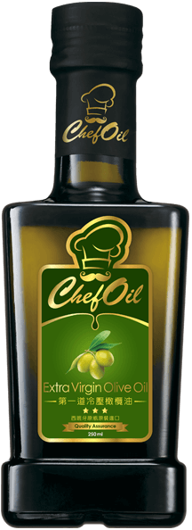
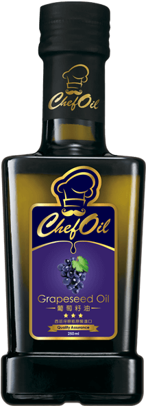

Chef Oil 主廚精選
完美便當提案
美味健康 午餐的快樂小時光
為了吃得健康，帶便當可說是現代人的全民運動，然而天天帶便當，最惱人的就是要絞盡腦汁想菜色。廚藝精湛的主廚龍師傅，特別教大家如何運用技巧以及簡單的方式，輕鬆料理出兼顧美味跟健康的便當菜色。同時，他也提醒大家：「準備便當講求方便，建議選擇冷食或是經過二次加熱不易走味的菜色，運用蔬果與肉類、雞蛋搭配製備，再依油溫佐以適當油品，就是便當料理的原則！」
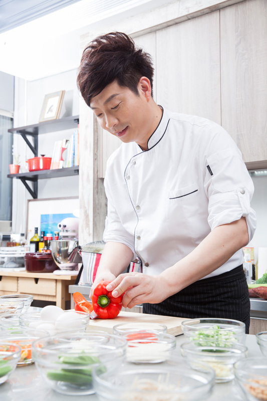
RECIPES
1
嫩滑五彩炒雞絲
油品
Chef Oil 第一道冷壓橄欖油 (Extra Virgin Olive Oil)
食材
-
雞胸肉300克
-
紅甜椒1顆
-
黃甜椒1顆
-
青椒1顆
-
洋蔥1/2顆
-
生香菇2朵
-
蒜末20克
調味品
鹽、米酒、太白粉
作法
Step 1
將紅、黃甜椒、青椒、香菇、洋蔥切絲備用。
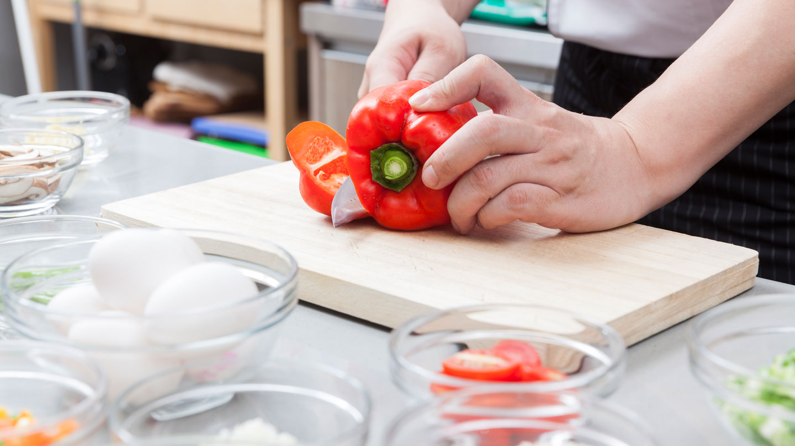
Step 2
雞胸肉絲加入調味料後再倒入第一道冷壓橄欖油，攪拌均勻，使肉滑嫩。
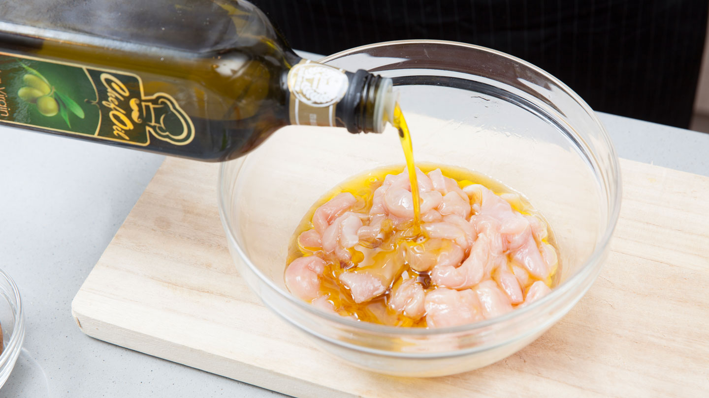
Step 3
將雞胸肉絲放入熱鍋中，稍微拌炒至熟後取出。
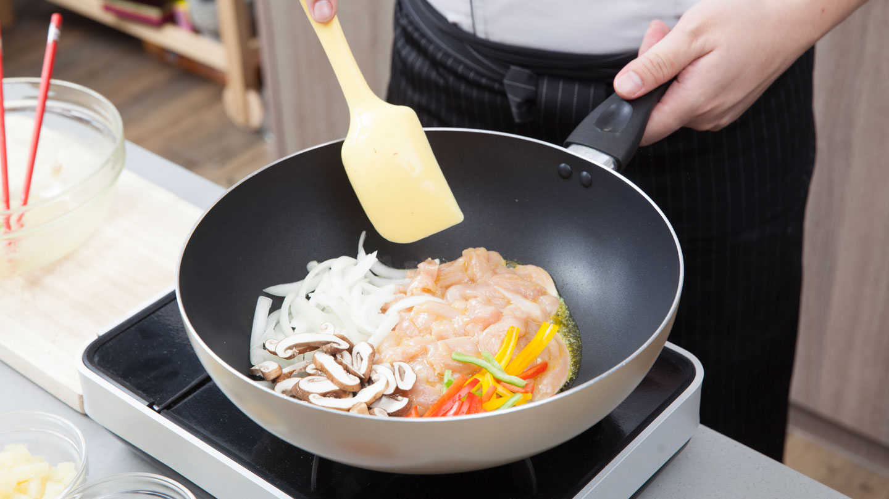
Step 4
放入蒜末炒香後放入所有食材拌炒即完成。
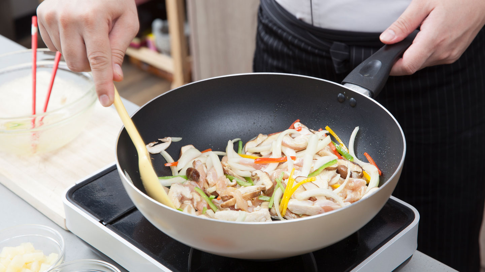
RECIPES
2
茄汁鮮蝦厚燒蛋
油品
Chef Oil 葡萄籽油 (Grapeseed Oil)
食材
-
新鮮蝦仁100克
-
雞蛋5顆
-
洋蔥1/2顆切末
-
小番茄4-5粒
-
三色豆50克
調味品
番茄醬、白糖、水、太白粉水、味醂
作法
Step 1
鍋中加入葡萄籽油，油熱後放入新鮮蝦仁煎香後取出。
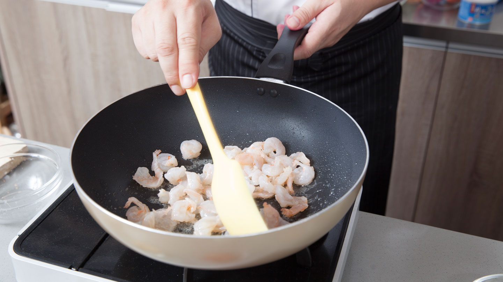
Step 2
用刷子將油塗滿鍋子後，將加入味醂打散的蛋汁倒入，待成形後摺成蛋捲狀、第二次動作鋪上蝦仁，再捲一次成厚燒蛋取出。
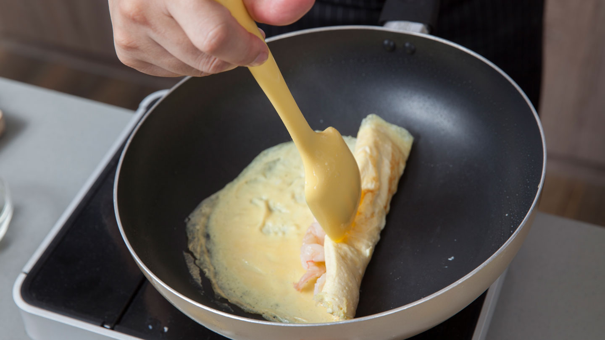
Step 3
炒香洋蔥與調味料，熬煮成茄汁；將煮好的茄汁搭配厚燒蛋即完成。
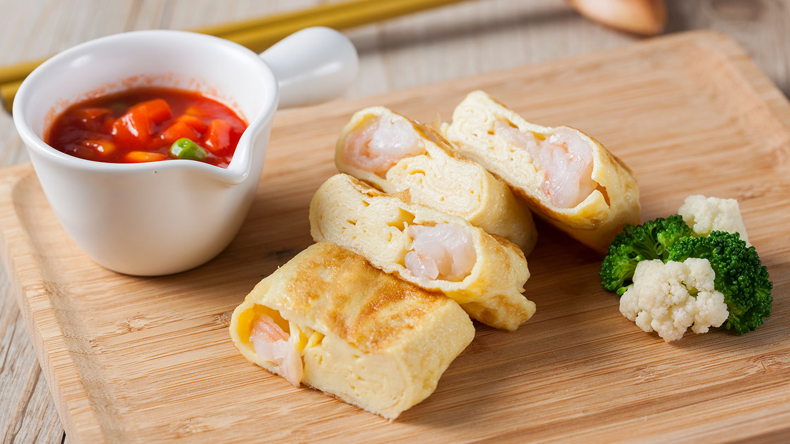
RECIPES
3
果香糖醋瓦塊魚
油品
Chef Oil 玄米油 (Rice Bran Oil)
食材
-
魚塊300克
-
鳳梨片3片
-
奇異果1顆
-
小番茄5粒
調味品
鹽、米酒、地瓜粉、白糖、番茄醬、白醋
作法
Step 1
魚塊用鹽、米酒醃漬5分鐘，沾上地瓜粉備用。
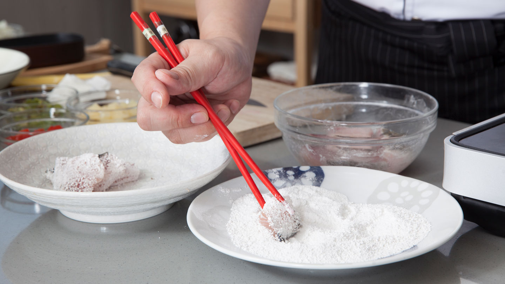
Step 2
鍋中加入玄米油，油熱後關火後放入魚塊炸至金黃酥脆，此法不會焦黑，又能保持魚肉的細緻口感。
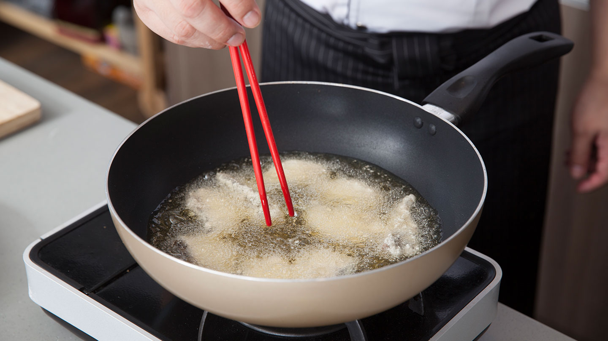
Step 3
加入玄米油、糖、番茄醬、白醋，製成糖醋醬汁後加入魚塊，讓魚塊均勻沾上糖醋醬。
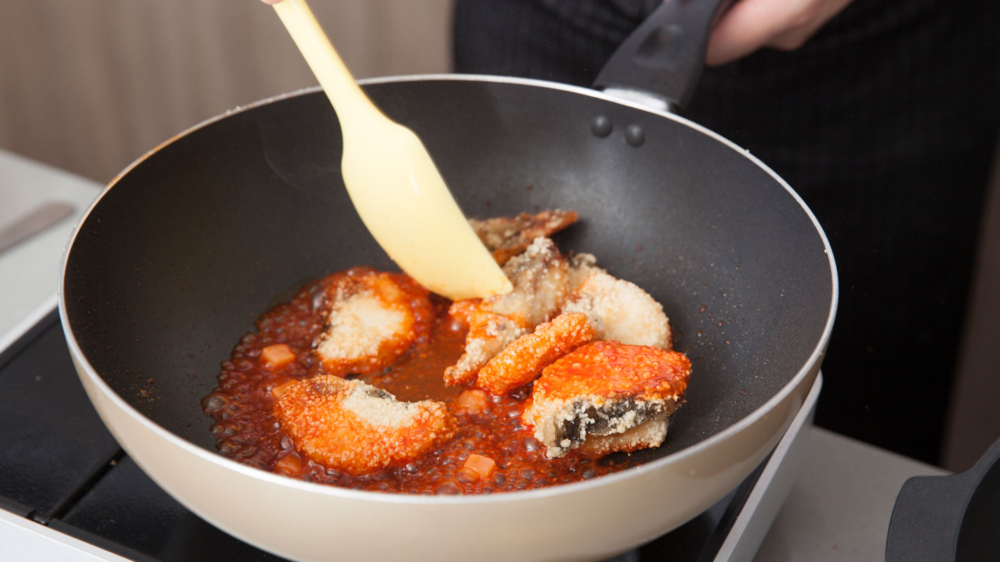
Step 4
將水果丁擺至魚塊上裝飾即可完成。
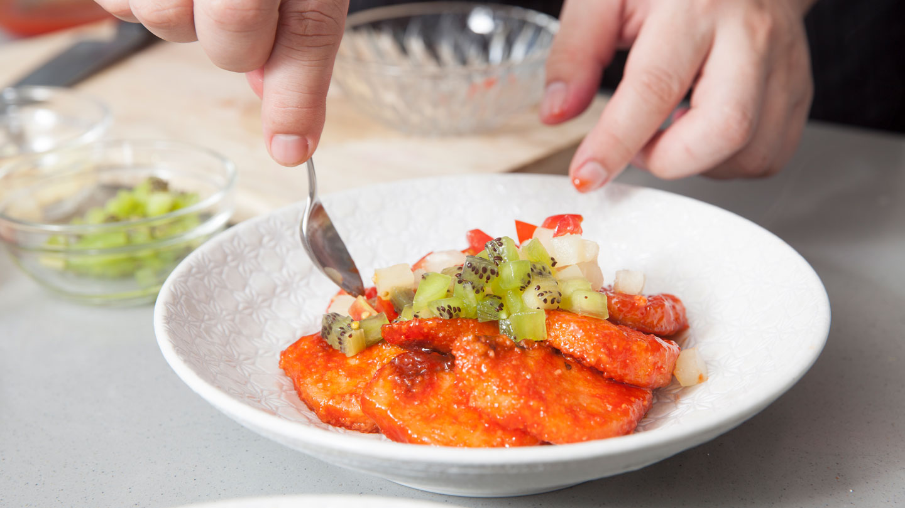